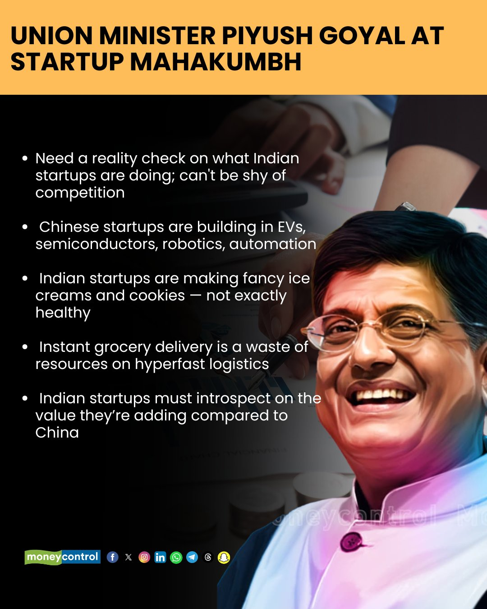

Crypto is Not About Tax Evasion; It's About Collecting Decentralized Tax Efficiently
The mainstream narrative surrounding cryptocurrency often paints it as a tool for tax evasion and illicit activities. However, this is far from the truth. The true power of cryptocurrency lies in its ability to facilitate efficient and decentralized tax collection. Instead of relying on intrusive government surveillance, crypto offers a system where tax collection is automated through smart contracts, transaction fees, and controlled inflation.
How Decentralized Taxation Works
Decentralized finance (DeFi) and blockchain technology enable a novel approach to tax collection. Rather than relying on arbitrary tax brackets and manual enforcement, crypto tax can be collected in two efficient ways:
- Transaction Costs: Every blockchain transaction incurs a fee, which can be programmed to contribute to a public treasury. This means that tax is collected automatically with every transaction, removing the need for complex tax filings and audits.
- Controlled Inflation: Rather than printing unlimited fiat money, cryptocurrency projects can introduce controlled inflation, where a small percentage of newly minted tokens is directed towards public spending.
These methods ensure fair and transparent taxation, reducing tax evasion and eliminating the need for an extensive bureaucratic apparatus. Smart contracts ensure that collected funds are distributed efficiently to essential services, cutting down corruption and inefficiencies present in centralized systems.
The Link Between Crypto, GDP Growth, and Velocity of Money
A core principle of economic growth is the velocity of money—the rate at which money circulates in the economy. The faster money moves, the greater the economic activity and GDP growth. Cryptocurrency drastically increases the velocity of money through:
- Faster Transactions: Traditional banking systems impose delays, while crypto enables instant cross-border transactions.
- Lower Transaction Costs: High banking fees slow economic activity. Crypto transactions are significantly cheaper.
- Decentralized Distribution: Unlike fiat money, which is often hoarded by large corporations or banks, cryptocurrency can be distributed widely and transparently.
Fiat currency, controlled by central banks, fails to achieve this efficiency. Government-controlled monetary policies often lead to stagnation, inefficiencies, and wealth concentration in the hands of elites. Cryptocurrency levels the playing field, allowing for fairer distribution of economic opportunities.
India’s Urgent Need for Decentralization
India, a country with a high poverty rate and vast economic disparities, desperately needs decentralization. However, the Indian government’s crypto policies are actively hurting its own economy rather than embracing innovation.
First, they imposed an exorbitant 30% tax on crypto profits, discouraging innovation and driving traders and developers to friendlier jurisdictions. Now, they are introducing draconian Income Tax Rules aimed at turning India into a surveillance state.
Upcoming Mass Surveillance Measures
Starting April 1, 2026, the Indian Income Tax Department will be granted sweeping powers to access:
- Social media accounts
- Personal emails
- Bank accounts
- Online investment and trading platforms
This means that if there is even a suspicion of tax evasion, the government can freely monitor and access an individual’s entire digital footprint. Instead of focusing on making taxation fairer and more efficient, the government is prioritizing surveillance and control over its citizens.
A Government That Distrusts Its Citizens but Lacks Accountability
While the government is busy doubting its citizens, it refuses to hold itself accountable. The Modi government has spent ₹3,600 crore in just three-and-a-half years on advertisements featuring the Prime Minister. This is public money that could have been invested in infrastructure, education, or healthcare.
Moreover, the controversial Electoral Bonds scheme has allowed political parties to collect ₹12,155 crore in donations—most of which come from corporate donors looking for political favors. Public donations, which are transparent and small in size, make up almost none of this amount. This raises serious concerns about corruption and quid pro quo deals happening behind closed doors.
India’s Corrupt Bureaucracy and the Government’s Double Standards
India is plagued with corruption at every level of governance. Multi-crore deals happen daily, and yet, the government chooses to target ordinary citizens instead of its own corrupt bureaucrats and politicians.
- 2,623 wilful defaulters owe ₹1.96 trillion to Indian banks, yet no serious action has been taken against them.
- Nirmala Sitharaman claims that WhatsApp chats exposed ₹250 crore in unaccounted cash and ₹90 crore in crypto assets—a mere fraction compared to the systemic corruption within the government itself.
- Such claims lack proper validation and transparency. How many people were involved? Under what circumstances was this money unaccounted for? Without proper disclosure, these statements appear more like distractions than genuine anti-corruption efforts.
The Real Solution: Government Transparency, Not Citizen Surveillance
Instead of harassing citizens and turning India into an Orwellian surveillance state, the government should focus on:
- Implementing Decentralized Tax Collection: Adopt blockchain-based taxation to ensure fair and efficient tax collection.
- Reducing Government Waste: Cut down unnecessary expenditures, such as extravagant advertising campaigns.
- Increasing Political Transparency: Make all political donations public and traceable to avoid quid pro quo deals.
- Holding Billionaires and Corporates Accountable: Instead of targeting retail crypto traders, go after major defaulters who have looted the country.
Web3 and Startups
Web3 is not just a buzzword; it represents the future of technology and innovation, shaping the next phase of our digital transition. With increased scalability,almost all startups will be hosted on Web3 benefiting from decentralization, whether in AI, e-commerce, social media, gaming,or any other sector. India must embrace Web3 technologies to drive economic growth and create a more inclusive society. By fostering an ecosystem that encourages entrepreneurship and innovation, the country can unlock its full potential and ensure financial freedom for all.
While government may blame startups for not delivering, the government must also reflect on the regressive environment it creates for startup development. China, a meritocratic and atheist nation, invests heavily in education and is not hindered by superstition or illiteracy. China doesn't have to fight for or create any religious conflict, nor does it have to deal with the politics of religion that India suffers from. Meanwhile, the U.S. attracts talent from India and around the world, benefiting from the brain drain in India. Indians who thrive abroad struggle to succeed in India due to bureaucratic hurdles and restrictive economic policies. If India wants to retain its best minds and foster innovation, it must create an environment that nurtures talent rather than stifling it.

Conclusion
Cryptocurrency is not about tax evasion—it is about efficient, fair, and transparent tax collection. Instead of adopting surveillance-heavy policies that punish ordinary citizens, India must embrace blockchain technology to create a fairer economy. The government must stop doubting its people and start holding itself accountable for the rampant corruption and inefficiencies that continue to plague the nation. Only then can India truly unlock its economic potential and ensure financial freedom for all.